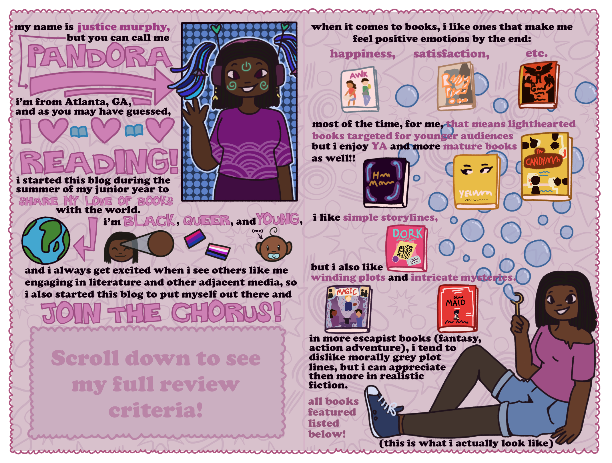

Who am I?
My name is Justice Murphy, but you can call me Pandora. I'm 16 years old, and as you may have guessed, I love reading! I started this blog during the summer of my junior year to share my love of books with the world. I'm black, queer, and young, and I always get excited when I see others like me engaging in literature and other adjacent media, so I also started this blog to put my voice out there and join the chorus!
When it comes to books, I like ones that make me feel positive emotions by the end: Happiness, vindication, etc. Most of the time, for me, that means lighthearted books targeted for younger audiences, but I enjoy YA and more mature books as well! I like simple storylines, but I also love winding plots and intricate mysteries. In more escapist books (fantasy, action-adventure), I tend to dislike morally grey plot lines, but I can appreciate them more in realistic fiction.
BOOKS FEATURED:
Awkward, Svetlana Chmakova
Ready Player One, Ernest Cline
Grounded for All Eternity, Darcy Marks
Hotel Magnifique, Emily J. Taylor
Yellowface, R. F. Kuang
The Candymakers, Wendy Mass
Dork Diaries, Rachel Renée Russell
Magic's Most Wanted, Tyler Whitesides
The Maid, Nita Prose
MY REVIEW CRITERIA:
• Did I have a good time? (Duh!)
• How interesting is the prose? (I'm a huge fan of words in general and I LOVE wordplay!)
• How diverse is the story? (Do the characters look like me? How about my friends?)
• Are the characters likeable? (I am quite a character based person- they can make or break a story for me!)
You are free to disagree with any of my opinions & viewpoints, but i must ask for you to keep a kind attitude! I'd love to discuss our various book thoughts on any of my social medias.